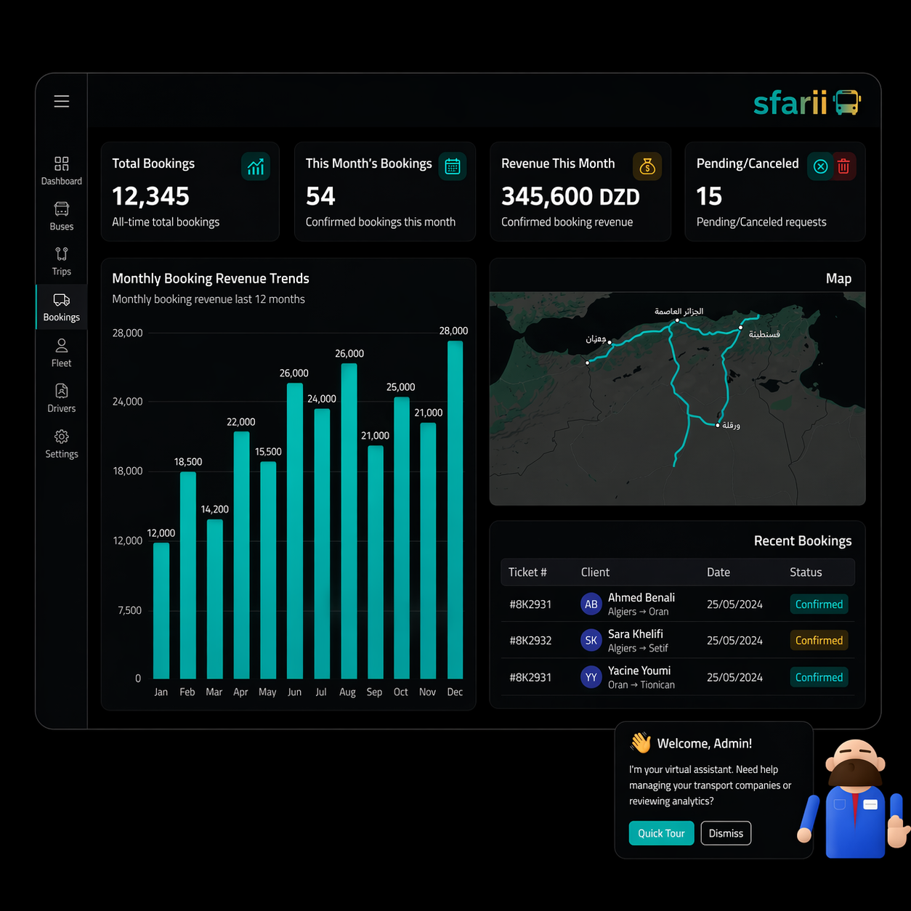
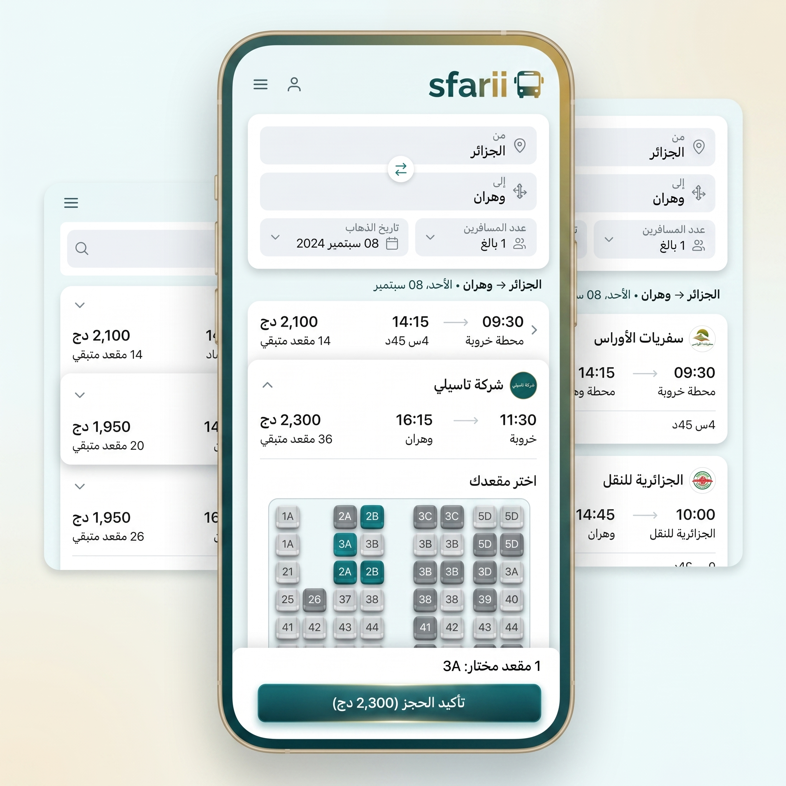

01
التحقق من هوية العميل
يعرض خطوة إدخال أو مراجعة هوية العميل قبل متابعة الحجز داخل التصور الحالي.
جاري تحميل المنصة...
مشروع واجهة يوضح كيف يمكن لشركة نقل عرض رحلاتها، استقبال الحجوزات، ومتابعة العمليات من لوحة تحكم بسيطة. النسخة الحالية بروتوتايب قابل للعرض والمناقشة، وليست خدمة تجارية جاهزة.

المشروع يركز على رحلة الحجز ومتابعة الرحلات بدل عرض وعود تجارية غير مثبتة
يعرض البروتوتايب فكرة صفحة أو رابط خاص بالشركة، مع اسمها ومعلومات رحلاتها بدل خلط كل الشركات في تجربة واحدة.
يمثل المشروع مسارات بين الولايات، نقاط الانطلاق والوصول، ومعلومات الرحلة حتى يكون البحث والحجز مفهومين للمستخدم.
تعرض لوحة التحكم أرقامًا أساسية مثل عدد الحجوزات، الرحلات، ونسبة الإشغال كأمثلة تساعد على فهم حالة النشاط.
يركز مسار الحجز على اختيار الرحلة، إدخال المعلومات الضرورية، ثم تأكيد الحجز بطريقة مفهومة على الهاتف أو الويب.
العميل يرى البحث والحجز فقط، بينما ترى الشركة الرحلات والحجوزات والإحصائيات من لوحة تحكم منفصلة.
يمكن تطوير البروتوتايب لاحقًا بإضافة الدفع، الإشعارات، صلاحيات المستخدمين، وربط قاعدة بيانات حقيقية.
الهدف هو إظهار تسلسل منطقي من البحث إلى الحجز ثم متابعة الحجز من جهة الإدارة
تبدأ التجربة من بيانات شركة النقل، المسارات المتاحة، ومواعيد الرحلات التي ستظهر للعميل.
يبحث العميل عن المسار المناسب، يراجع تفاصيل الرحلة، ثم يدخل معلوماته الأساسية لتأكيد الطلب.
تظهر الحجوزات في لوحة التحكم مع الرحلات والإحصائيات حتى تفهم الشركة ما يحدث في يوم العمل.
هذا القسم يوضح حدود النسخة الحالية حتى يكون العرض واقعيًا وشفافًا
الأجزاء التي يمكن عرضها بصريًا
نقاط يمكن تقييمها في المشروع
أجزاء تحتاج Backend أو خدمات خارجية
هذه الواجهة تركز على ما يحتاجه العميل لإتمام حجز أولي: اختيار المسار، قراءة تفاصيل الرحلة، وإرسال معلومات الحجز. الهدف هو اختبار وضوح التجربة قبل ربطها بخدمات حقيقية.

كل فيديو يعرض جزءًا محددًا من التجربة حتى يمكن تقييم المشروع دون الاعتماد على كلام تسويقي.
يعرض خطوة إدخال أو مراجعة هوية العميل قبل متابعة الحجز داخل التصور الحالي.
يوضح مسار الحجز من الهاتف: اختيار الرحلة، إدخال البيانات، ثم الوصول إلى تأكيد أولي.
يوضح كيف يمكن للمشرف استعمال Dashboard لمتابعة الرحلات، الحجوزات، والإحصائيات.
يعرض تصورًا لإضافة أو تنظيم الرحلات والمواعيد قبل أن تظهر للعميل في الحجز.
يعرض نسخة الويب من الحجز، وهي مفيدة لمن لا يستعمل تطبيق الهاتف.
بدل شهادات افتراضية، هذه نقاط فحص يمكن عرضها أمام لجنة المناقشة أو المستخدمين الأوائل
هل يستطيع العميل فهم الرحلة المطلوبة وإتمام الطلب دون شرح خارجي؟ هذا هو الاختبار الأساسي لتجربة الحجز.
هل تعرض لوحة التحكم المعلومات التي تهم شركة النقل فعلاً: الرحلات، الحجوزات، والحالة العامة لليوم؟
هل يوضح المشروع الفرق بين تجربة العميل وتجربة المشرف؟ الفصل بينهما مهم حتى لا تصبح الواجهة مزدحمة وغير مفهومة.
إجابات مختصرة تفرق بين ما هو منجز في الواجهة وما يحتاج تطويرًا لاحقًا
Safarii هنا هو بروتوتايب واجهات يشرح فكرة نظام حجز وإدارة رحلات لشركات النقل. الهدف هو عرض التدفق وتجربة المستخدم، وليس تشغيل خدمة إنتاجية كاملة.
لا. النسخة الحالية موجهة للعرض والاختبار. تحتاج قاعدة بيانات، مصادقة، صلاحيات، وخادم فعلي قبل استخدامها من طرف شركة نقل حقيقية.
يعرض المسار طريقة البحث عن رحلة، قراءة التفاصيل، إدخال بيانات العميل، ثم الوصول إلى تأكيد أولي. الدفع الحقيقي غير مفعّل في هذه النسخة.
الموقع الحالي يعرض واجهات وفيديوهات بروتوتايب. ربط قاعدة بيانات حقيقية سيكون مرحلة لاحقة عند تحويل المشروع إلى تطبيق فعلي.
لوحة التحكم تشرح جهة شركة النقل: متابعة الرحلات، الحجوزات، وبعض المؤشرات البسيطة. وجودها يوضح أن المشروع لا يقتصر على صفحة حجز للعميل فقط.
الخطوة التالية هي بناء Backend، تخزين الرحلات والحجوزات، إضافة تسجيل الدخول، ثم اختبار الحجز مع بيانات حقيقية وحالات خطأ واضحة.
يمكن استعمال هذه الصفحة لشرح فكرة المشروع، عرض الفيديوهات، وتحديد ما يحتاج تطويرًا في المرحلة القادمة.